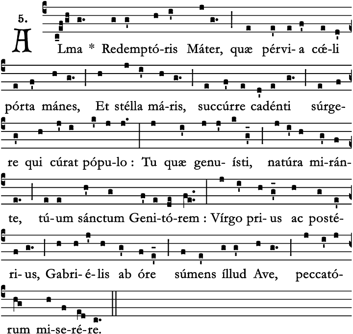
Maria-antifoon van de Advent tot het feest van de Opdracht van de Heer (Maria Lichtmis)
Verheven moeder van de Verlosser, die altijd zijt de open deur des hemels en de ster der zee, kom het volk te hulp dat valt en poogt op te staan.
Gij die tot verwondering van de natuur uw heilige Schepper hebt gebaard en maagd zijt gebleven; gij die door Gabriël zijt begroet, ontferm u over ons, zondaars.
Amen
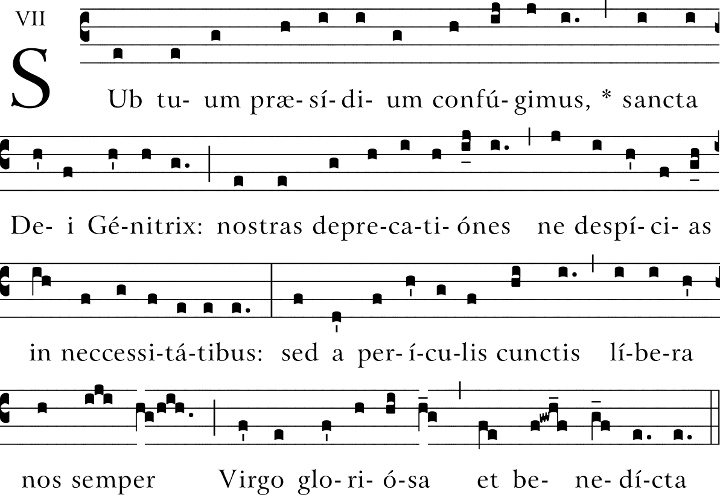
Tot u nemen wij onze toevlucht:
wees onze bescherming, heilige Moeder van God,
wijs onze gebeden niet af als wij in nood zijn,
maar verlos ons uit alle gevaren,
gij, glorierijke en gezegende Maagd.
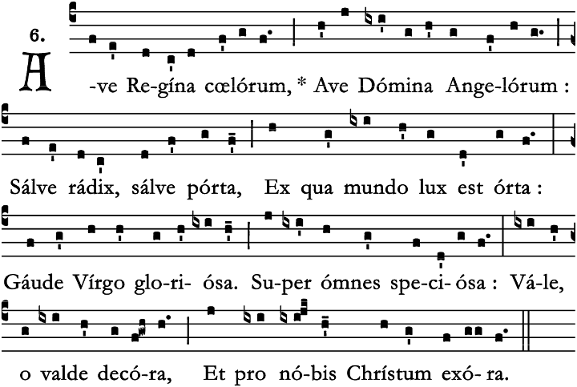
Maria-antifoon van het feest van de Opdracht van de Heer (Maria Lichtmis) tot Witte Donderdag
Gegroet gij, hemelkoningin;
gegroet gij, engelenvorstin;
gij wortel die het leven draagt;
gij poort waaruit het licht ons daagt.
Verheug u,
wonderschone Maagd.
Vaarwel en bied uw hulpbetoon,
wees onze voorspraak bij uw Zoon.
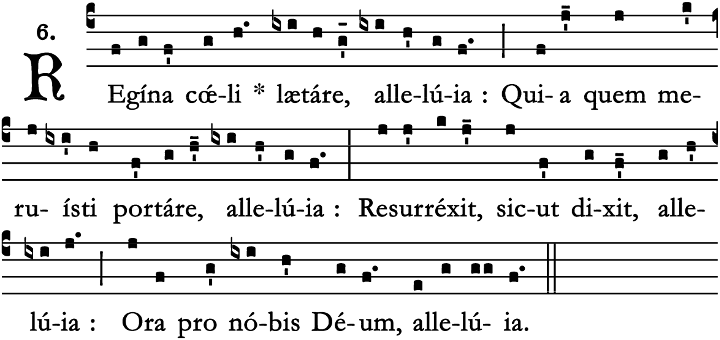
Maria-antifoon van de Paaswake tot Pinksteren
Koningin des hemels, verheug u, alleluja.
Omdat Hij, die gij waardig geweest zijt te dragen, alleluja,
Verrezen is, zoals Hij gezegd heeft, alleluja,
Bid God voor ons, alleluia.
Verheug en verblijd u, Maagd Maria, alleluja,
Want de Heer is waarlijk verrezen, alleluja.
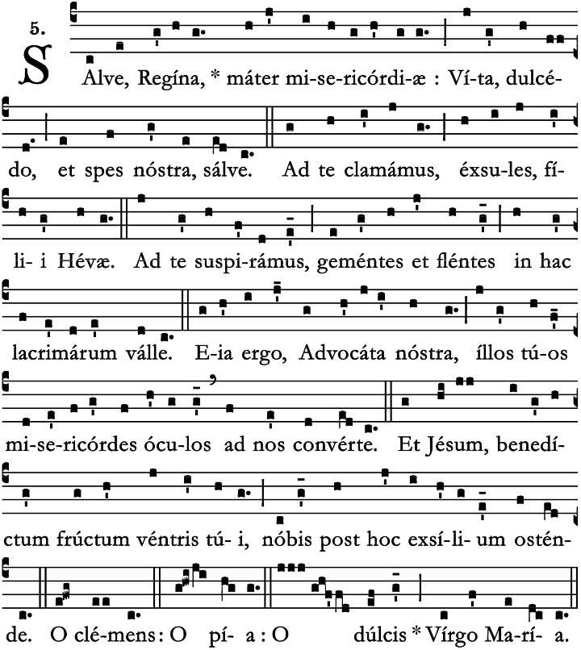
Maria-antifoon van het feest van de H. Drie-eenheid (eerste zondag na Pinksteren) tot het feest van Christus Koning (laatste zondag voor de Advent)
Wees gegroet, koningin,
moeder van barmhartigheid;
ons leven, onze vreugde en onze hoop, wees gegroet.
Tot u roepen wij,
ballingen, kinderen van Eva;
tot u smeken wij, zuchtend en wenend
in dit dal van tranen.
Daarom dan, onze voorspreekster,
sla op ons
uw barmhartige ogen;
en toon ons,
na deze ballingschap Jezus,
de gezegende vrucht van uw schoot.
O goedertieren, O liefdevolle,
O zoete maagd Maria.
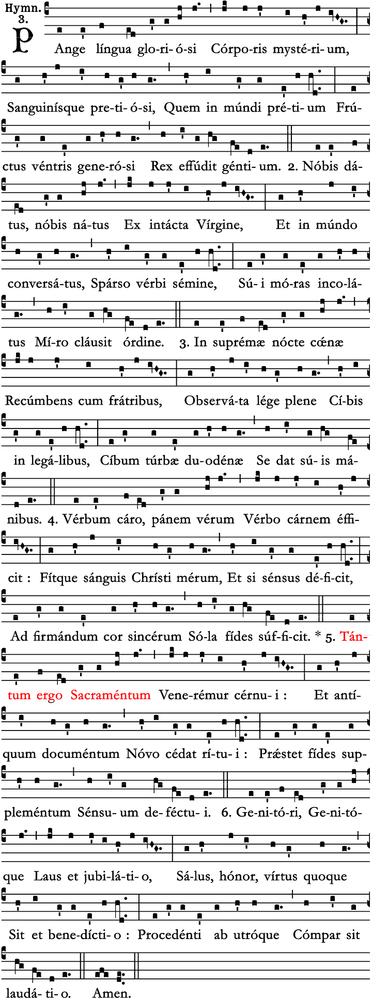
Bezing, tong,
het Mysterie van het glorieuze Lichaam,
En van het kostbaar Bloed,
Dat tot prijs voor de wereld,
Een vrucht van edele schoot,
De Koning der volkeren heeft uitgestort.
Voor ons gegeven, voor ons geboren,
Uit een ongerepte Maagd,
En op aarde verkeerd,
Heeft Hij, nadat het zaad van het woord was uitgestrooid,
Het toeven hier besloten,
Met een wonderbare orde.
In de nacht van het hoogste avondmaal,
Aanliggend met zijn broeders,
De gehele wet in acht nemend,
Met het wettelijk voedsel,
Tot voedsel voor de schare van twaalf,
Gaf Hij zichzelf met eigen hand.
Het Woord als vlees maakt echt brood
Door een Woord tot Vlees;
En de wijn wordt het Bloed van Christus;
En als de zintuigen falen,
Volstaat, om het oprechte hart te versterken,
Het geloof alleen.
Laten wij dan, diep gebogen,
Prijzen 't grote sacrament;
Dat de oude wetten wijken
Voor het nieuwe Testament.
Geve het geloof het inzicht,
Waar het zintuig niets herkent.
Aan de Vader, aan de Zoon ook
Weze lof en eer gebracht;
Steeds zal men Hun beiden brengen
Eer en roem en hulde kracht.
Hem die voortkomt uit Hen beiden,
Zij gelijke dank gebracht. Amen. Alleluia.
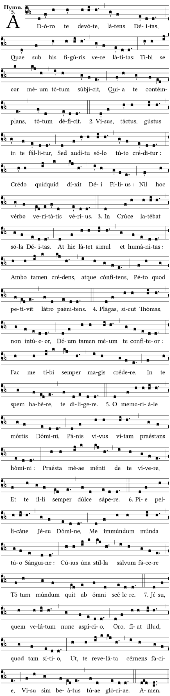
Ik aanbid met eerbied U, verborgen God,
die hier onder tekens waarlijk Zich verschuilt:
aan U onderwerpt zich heel en al mijn hart,
want U schouwend weet ik dat het niets vermag.
Oog en smaak en tastzin wordt in U misleid,
het geloof steunt veilig slechts op het gehoor;
ik geloof al wat Gods Zoon vérkondigd heeft,
niets is meer waar dan het woord der Waarheid zelf.
Op het kruis ging slechts uw heil'ge Godheid schuil,
hier blijft echter ook uw mensheid diep verhuld;
toch belijdend beide met een vast geloof,
vraag ik wat berouwvol U de rover vroeg.
Ik zie niet uw wonden, als eens Thomas deed,
toch wil ik belijden U als mijnen God;
doe in U geloven mij steeds méér en meer,
doe mij op U hopen, U beminnen slechts.
O gedachtenisteken van des Heren dood,
levend Brood,dat aan den mens het leven geeft,
geef mij dat mijn geest in U zijn leven vindt,
geef hem als zijn zoetheid U te smaken steeds.
Pelikaan vol goedheid, Jesus onze Heer,
reinig mij, onreine, door uw zuiver Bloed,
waarvan éne druppel zelfs verlossen kan
heel het wereldrond van al zijn zondigheid.
Jesus, dien gesluierd ik hier nu aanschouw,
moge lessen, bid ik, zich mijn grote dorst;
dat ik ongesluierd ziende uw aangezicht,
zalig zij door 't schouwen van uw heerlijkheid. Amen
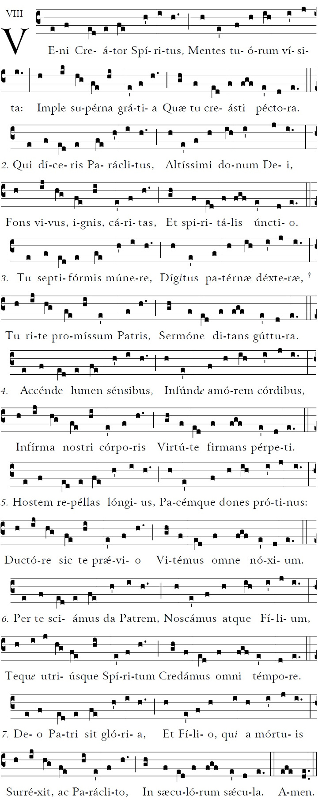
Kom Schepper, Geest, daal tot ons neer,
houd Gij bij ons uw intocht, Heer;
vervul het hart dat U verbeidt,
met hemelse barmhartigheid.
Gij zijt de gave Gods, Gij zijt
de grote Trooster in de tijd,
de bron waaruit het leven springt,
het liefdevuur dat ons doordringt.
Gij schenkt uw gaven zevenvoud,
O hand die God ten zegen houdt,
O taal waarin wij God verstaan,
wij heffen onze lofzang aan.
Verlicht ons duistere verstand,
geef dat ons hart van liefde brandt,
en dat ons zwakke lichaam leeft
vanuit de kracht die Gij het geeft.
Verlos ons als de vijand woedt,
geef ons de vrede weer voorgoed,
Leid Gij ons voort, opdat geen kwaad,
geen ongeval ons leven schaadt.
Doe ons de Vader en de Zoon
aanschouwen in de hoge troon,
O Geest van beiden uitgegaan,
wij bidden U gelovig aan.
Aan God de Vader zij de eer
en aan de opgestane Heer
en aan de Geest die troost en leidt
van eeuwigheid tot eeuwigheid. Amen
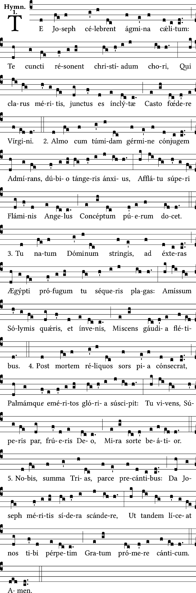
U, Joseph. bejubelen de hemelkoren;
u prijzen alle christenscharen;
u, die om uw heerlijke deugden verbonden waart
in kuise echt met de roemrijke Maagd.
Als gij, door angstige zorg gekweld,
u verwondert, hoe uw bruid haar gezegende vrucht kan dragen,
komt een engel u melden dat zij het Kind ontving
door de werking van den Geest van boven.
Gij omhelst den pasgeboren Heer,
en volgt Hem op Zijn vlucht naar het verre land Egypte;
gij zoekt Hem, verloren in Jerusalem,
en vindt Hem terug, uw vreugde mengend met uw tranen.
Anderen valt een zalig lot eerst na hun dood ten deel;
pas als de palm verdient is, gaan zij de glorie binnen.
maar gij geniet God reeds bij uw leven, gelijk de hemelingen;
Ja, nog gelukkiger door uw wonderheerlijk lot.
Allerheiligste Drievuldigheid, spaar ons op onze bede;
geef dat wij door Josephs verdiensten ten hemel gaan;
opdat wij eens u zonder einde ons danklied mogen zingen
Amen.
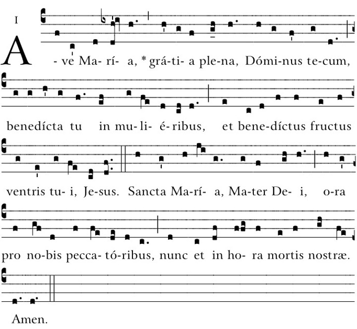
Wees gegroet Maria, vol van genade.
De Heer is met U.
Gij
zijt de gezegende onder de vrouwen.
En gezegend is
Jezus,
de Vrucht van Uw schoot.
Heilige Maria, Moeder van God,
bid voor ons, zondaars,
nu en in het uur van onze dood.
Amen
Wees gegroet Maria, vol van genade.
De Heer is met U.
Gezegend zijt Gij boven alle vrouwen,
en gezegend is de vrucht
van Uw lichaam,
Jezus.
Heilige Maria, Moeder Gods,
bid voor ons, arme zondaars,
nu en in het uur van onze dood.
Amen
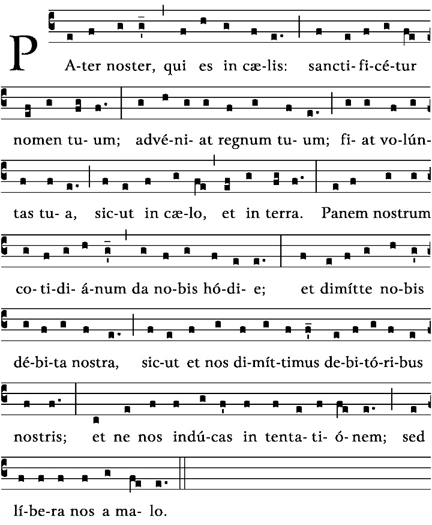
Onze Vader,
die in de hemel zijt,
Uw Naam worde geheiligd,
Uw Rijk kome,
Uw wil geschiede op aarde zoals in
de hemel.
Geef ons heden ons dagelijks brood,
en vergeef ons onze
schulden
zoals ook wij vergeven aan onze schuldenaren.
En breng ons niet in beproeving,
maar verlos ons van het
kwade.
Want van U is het Koninkrijk en de kracht en de heerlijkheid in eeuwigheid.
Amen
In nómine Patris et Fílii et Spíritus Sancti
Amen
In de naam van de Vader, de Zoon en de Heilige Geest.
Amen
Pater noster,
Qui es in cælis,
Sanctificétur nomen
tuum.
Advéniat regnum tuum.
Fiat volúntas tua, sicut in
cælo et in terra.
Panem nostrum quotidiánum da nobis hodie,
Et dimítte nobis
débita nostra,
Sicut et nos dimíttimus debitóribus
nostris.
Et ne nos indúcas in tentatiónem:
Sed líbera
nos a malo.
Quia tuum est regnum, Et potéstas, Et glória in sǽcula.
Amen
Onze Vader,
die in de hemel zijt,
Uw Naam worde geheiligd,
Uw Rijk kome,
Uw wil geschiede op aarde zoals in
de hemel.
Geef ons heden ons dagelijks brood,
en vergeef ons onze
schulden
zoals ook wij vergeven aan onze schuldenaren.
En breng ons niet in beproeving,
maar verlos ons van het
kwade.
Want van U is het Koninkrijk en de kracht en de heerlijkheid in eeuwigheid.
Amen
m. Peter Pieters
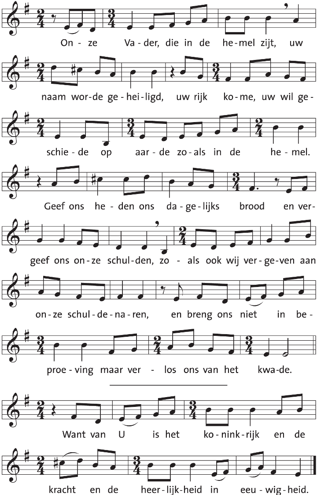
m. naar Mozarabische psalmtoon IV
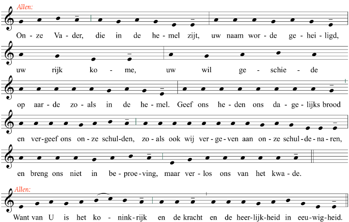
m. Peter van de Velde
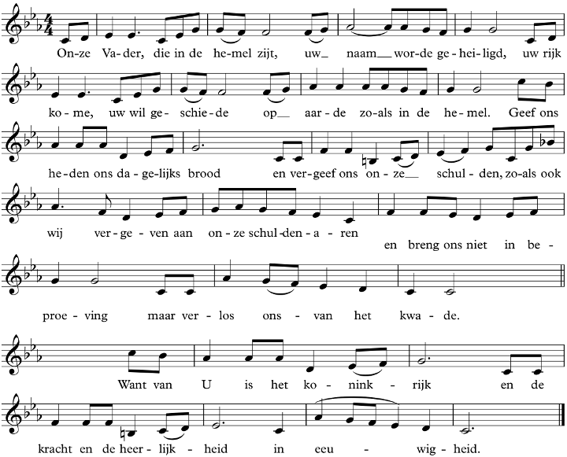
Glória Patri, et Fílio, et Spirítui Sancto,
Sicut erat in princípio, et nunc, et semper, et in sǽcula sæculórum.
Amen
Eer aan de Vader en de Zoon en de Heilige Geest,
Zoals het was in het begin, en nu, en altijd, en in de eeuwen der eeuwen.
Amen
Ave María, grátia plena,
Dóminus tecum.
Benedícta tu in
muliéribus,
et benedíctus Fructus ventris tui,
Iesus.
Sancta María, Mater Dei,
ora pro nobis peccatóribus,
nunc et in hora mortis nostræ.
Amen
Wees gegroet Maria, vol van genade.
De Heer is met U.
Gij
zijt de gezegende onder de vrouwen.
En gezegend is
Jezus,
de Vrucht van Uw schoot.
Heilige Maria, Moeder van God,
bid voor ons, zondaars,
nu en in het uur van onze dood.
Amen
Wees gegroet Maria, vol van genade.
De Heer is met U.
Gezegend zijt Gij boven alle vrouwen,
en gezegend is de vrucht
van Uw lichaam,
Jezus.
Heilige Maria, Moeder Gods,
bid voor ons, arme zondaars,
nu en in het uur van onze dood.
Amen
Glória in excélsis Deo
et in terra pax homínibus bonae voluntátis.
Laudámus te,
benedícimus te,
adorámus te,
glorificámus te,
grátias ágimus tibi propter magnam glóriam tuam,
Dómine Deus, Rex cæléstis,
Deus Pater omnípotens.
Dómine Fili Unigénite, Iesu Christe,
Dómine Deus, Agnus Dei, Fílius Patris,
qui tollis peccáta mundi, miserére nobis;
qui tollis peccáta mundi, súscipe deprecatiónem nostram.
Qui sedes ad déxteram Patris, miserére nobis.
Quóniam tu solus Sanctus,
tu solus Dóminus,
tu solus Altíssimus,
Iesu Christe,
cum Sancto Spíritu:
in glória Dei Patris.
Amen
Eer aan God in den hoge
en vrede op aarde aan de mensen die Hij liefheeft.
Wij loven U.
Wij prijzen
en aanbidden U.
Wij verheerlijken U
en zeggen U dank voor uw grote heerlijkheid.
Heer God, hemelse Koning,
God almachtige Vader;
Heer, eniggeboren Zoon, Jezus Christus;
Heer God, Lam Gods, Zoon van de Vader;
Gij die wegneemt de zonden der wereld, ontferm U over ons;
Gij die wegneemt de zonden der wereld, aanvaard ons gebed;
Gij die zit aan de rechterhand van de Vader, ontferm U over ons.
Want Gij alleen zijt de Heilige.
Gij alleen de Heer.
Gij alleen de Allerhoogste:
Jezus Christus,
met de Heilige Geest
in de heerlijkheid van God de Vader.
Amen
Credo in Deum Patrem omnipoténtem, Creatórem cæli et terræ,
et in Iesum Christum, Fílium Eius únicum, Dóminum nostrum,
qui
concéptus est de Spíritu Sancto, natus ex María Vírgine,
passus sub Póntio Piláto, crucifíxus, mórtuus, et sepúltus,
descéndit ad ínferos, tértia die resurréxit a mórtuis,
ascéndit ad cælos, sedet ad déxteram Patris omnipoténtis,
inde ventúrus est iudicáre vivos et mórtuos.
Credo in Spíritum
Sanctum,
sanctam Ecclésiam cathólicam, sanctórum
communiónem,
remissiónem peccatórum,
carnis
resurrectiónem,
vitam ætérnam.
Amen
Ik geloof in God de almachtige Vader, Schepper van hemel en
aarde.
En in Jezus Christus, Zijn enige Zoon, onze Heer,
Die ontvangen is van de Heilige Geest, geboren uit de maagd
Maria,
Die geleden heeft onder Pontius Pilatus, is gekruisigd,
gestorven en begraven,
Die nedergedaald is ter helle, de derde
dag verrezen uit de doden,
Die opgestegen is ten hemel, zit
aan de rechterhand van God, de almachtige Vader,
Vandaar zal
Hij komen oordelen de levenden en de doden.
Ik geloof in de
Heilige Geest;
De Heilige katholieke Kerk, de gemeenschap van
de heiligen;
De vergeving van de zonden;
De verrijzenis
van het lichaam;
En het eeuwig leven.
Amen
Credo in unum Deum, Patrem omnipoténtem,
factorem cæli et terræ,
visibílium ómnium et invisibílium.
Et in unum Dóminum Iesum Christum,
Fílium Dei unigénitum,
et ex Patre natum, ante ómnia sæcula.
Deum de Deo, lumen de lúmine,
Deum verum de Deo vero,
génitum, non factum,
consubstantiálem Patri:
per quem ómnia facta sunt.
Qui propter nos hómines
et propter nostram salútem
descéndit de cælis.
Et incarnátus est
de Spíritu Sancto ex María Vírgine,
et homo factus est.
Crucifíxus étiam pro nobis
sub Póntio Piláto;
passus et sepúltus est,
et resurréxit tértia die,
secúndum Scriptúras,
et ascéndit in cælum,
sedet ad déxteram Patris.
Et íterum ventúrus est cum glória,
iudicáre vivos et mórtuos,
cuius regni non erit finis.
Et in Spíritum Sanctum,
Dóminum et vivificántem:
qui ex Patre Filióque procédit.
Qui cum Patre et Fílio
simul adorátur, et conglorificátur:
qui locútus est per Prophétas.
Et unam, sanctam, cathólicam et apostólicam Ecclésiam.
Confíteor unum baptísma in remissiónem peccatorum.
Et expecto resurrectionem mortuorum, et vitam ventúri sæculi.
Amen
Ik geloof in één God, de almachtige Vader,
Schepper van hemel en aarde,
van al wat zichtbaar en onzichtbaar is.
En in één Heer, Jezus Christus,
eniggeboren Zoon van God,
voor alle tijden geboren uit de Vader.
God uit God, Licht uit Licht,
ware God uit de ware God.
Geboren, niet geschapen,
één in wezen met de Vader,
en door Wie alles geschapen is.
Hij is voor ons, mensen,
en omwille van ons heil
uit de hemel neergedaald.
Hij heeft het vlees aangenomen
door de heilige Geest uit de Maagd Maria,
en is mens geworden.
Hij werd voor ons gekruisigd,
Hij heeft geleden onder Pontius Pilatus
en is begraven.
Hij is verrezen op de derde dag,
volgens de Schriften.
Hij is opgevaren ten hemel:
zit aan de rechterhand van de Vader.
Hij zal wederkomen in heerlijkheid
om te oordelen levenden en doden.
En aan zijn rijk komt geen einde.
Ik geloof in de heilige Geest,
die Heer is en het leven geeft;
die voortkomt uit de Vader en de Zoon;
die met de Vader en de Zoon
te samen wordt aanbeden en verheerlijkt;
die gesproken heeft door de profeten.
Ik geloof in de éne, heilige, katholieke en apostolische Kerk.
Ik belijd één doopsel tot vergeving van de zonden.
Ik verwacht de opstanding van de doden en het leven van het komend rijk.
Amen
Quare fremuérunt gentes, et pópuli meditáti sunt inánia?
Astíterunt reges terræ, et príncipes convenérunt in unum advérsus Dóminum et advérsus christum eius:
“Dirumpámus víncula eórum et proiciámus a nobis iugum ipsórum!”.
Qui hábitat in cælis, irridébit eos, Dóminus subsánnabit eos.
Tunc loquétur ad eos in ira sua et in furóre suo conturbábit eos:
“Ego autem constítui regem meum super Sion, montem sanctum meum!”.
Prædicábo decrétum eius.
Dóminus dixit ad me: “Fílius meus es tu; ego hódie génui te.
Póstula a me, et dabo tibi gentes hereditátem tuam et possessiónem tuam términos terræ.
Reges eos in virga férrea et tamquam vas fíguli confrínges eos”.
Et nunc, reges, intellegíte; erudimíni, qui iudicátis terram.
Sérvite Dómino in timóre et exsultáte ei cum trémore.
Apprehendíte discíplinam, ne quando iráscatur, et pereátis de via, cum exarsérit in brevi ira eius.
Beáti omnes, qui confídunt in eo.
Waarom razen de volken, Bluffen de naties,
Komen de koningen der aarde bijeen, Spannen de vorsten samen tegen Jahweh en zijn Gezalfde:
"Laat ons hun ketens verbreken, Ons van hun boeien ontslaan!"
Die in de hemelen woont, lacht hen uit, Jahweh bespot ze;
Dan dreigt Hij ze toornig, Doet ze rillen voor zijn gramschap:
"Ik zelf stel Mij een koning aan, Op Sion, mijn heilige berg!"
Nu wil Ik Jahweh’s beslissing verkonden; Hij heeft Mij gezegd: Gij zijt mijn Zoon; Ik heb U heden verwekt.
Vraag Mij: dan geef Ik U de volkeren tot erfdeel, En de grenzen der aarde tot uw bezit;
Gij moogt ze vermorzelen met ijzeren knots, En stuk slaan als een aarden pot.
Koningen, bedenkt het dus wel; Weest gewaarschuwd, wereldregeerders!
Dient Jahweh in vreze; Beeft, en kust Hem de voeten!
Anders ontsteekt Hij in toorn, en loopt gij uw verderf tegemoet, Want licht kan zijn gramschap ontvlammen.
Gelukkig, wie tot Hem zijn toevlucht neemt!
Quicúmque vult salvus esse, ante ómnia opus est, ut téneat cathólicam fidem:
Quam nisi quisque integram inviolatamque servaverit, absque dúbio in ætérnum períbit.
Fides autem cathólica hcec est: ut unum Deum in Trinitáte, et Trinitátem in unitáte venerémur.
Neque confundéntes persónas, neque substántiam separántes.
Alia est enim persóna Patris, ália Fílii, ália Spíritus Sancti.
Sed Patris, et Fílii, et Spíritus Sancti una est divínitas, æquális glória, coætérna maiéstas.
Qualis Pater, talis Fílius, talis Spíritus Sanctus.
Increátus Pater, increátus Fílius, increátus Spíritus Sanctus.
Imménsus Pater, imménsus Fílius, imménsus Spíritus Sanctus.
Ætérnus Pater, ætérnus Fílius, ætérnus Spíritus Sanctus.
Et tamen non tres ætérni, sed unus ætérnus.
Sicut non tres increáti, nec tres imménsi, sed unus increátus et unus imménsus.
Simíliter omnípotens Pater, omnípotens Fílius, omnípotens Spíritus Sanctus.
Et tamen non tres omnipoténtes, sed unus omnípotens.
Ita Deus Pater, Deus Fílius, Deus Spíritus Sanctus.
Et tamen non tres Dii, sed unus est Deus.
Ita Dóminus Pater, Dóminus Fílius, Dóminus Spíritus Sanctus.
Et tamen non tres Dómini: sed unus est Dóminus.
Quia, sicut singillatim unamquamque persónam Deum ac Dóminum confitéri christiána veritáte compéllimur: ita tres Deos aut Dóminos dícere cathólica religióne prohibémur.
Pater a nullo est factus: nec creátus, nec génitus.
Fílius a Patre solo est: non factus, nec creátus, sed génitus.
Spíritus Sanctus a Patre et Fílio: non factus, nec creátus, nec génitus, sed procédens.
Unus ergo Pater, non tres Patres: unus Fílius, non tres Fílii: unus Spíritus Sanctus, non tres Spíritus Sancti.
Et in hac Trinitáte nihil prius aut postérius, nihil maius aut minus: sed totæ tres persónæ coætérnæ sibi sunt et coæquáles.
Ita ut per ómnia, sicut iam supra dictum est, et únitas in Trinitáte, et Trínitas in unitáte veneránda sit.
Qui vult ergo salvus esse, ita de Trinitáte séntiat.
Sed necessárium est ad Ætérnam salútem, ut Incarnatiónem quoque Dómini nostri Iesu Christi fidéliter credat.
Est ergo fides recta ut credámus et confiteámur quia Dóminus noster Iesus Christus, Dei Fílius, Deus et homo est.
Deus est ex substántia Patris ante sæcula génitus: et homo est ex substántia matris in sæculo natus.
Perféctus Deus, perféctus homo: ex ánima rationáli et humána carne subsístens.
Equális Patri secúndum divinitátem: minor Patre secúndum humanitátem.
Qui, licet Deus sit et homo, non duo tamen, sed unus est Christus.
Unus autem non conversióne divinitátis in carnem: sed assumptióne humanitátis in Deum.
Unus omníno, non confusióne substántiæ: sed unitáte persónæ.
Nam sicut ánima rationális et caro unus est homo: ita Deus et homo unus est Christus.
Qui passus est pro salúte nostra: descéndit ad ínferos: tértia die resurréxit a mórtuis.
Ascéndit ad cælos, sedet ad déxteram Dei Patris omnipoténtis: inde ventúrus est iudicáre vivos et mórtuos.
Ad cuius advéntum omnes hómines resúrgere habent cum corpóribus suis: et redditúri sunt de factis própriis ratiónem.
Et qui bona egérunt, ibunt in vitam ætérnam: qui vero mala, in ignem æternum.
Hæc est fides cathólica, quam nisi quisque fidéliter firmitérque credíderit, salvus esse non póterit.
Al wie behouden wil worden, heeft vóór alles nodig, dat hij het katholieke geloof vasthoudt.
Wie dit niet volledig en ongeschonden bewaart, zal ongetwijfeld voor eeuwig verloren gaan.
Het katholieke geloof nu is, dat wij één God in de drieheid en de drieheid in de eenheid aanbidden,
zonder de Personen te vermengen of het Wezen te delen.
Want de Persoon van de Vader, die van de Zoon en die van de Heilige Geest zijn ieder een andere Persoon.
Maar één is de Godheid van de Vader en van de Zoon en van de Heilige Geest, gelijk is hun heerlijkheid en gelijk van eeuwigheid hun majesteit.
Zoals de Vader is, zo is de Zoon, zo is ook de Heilige Geest.
Ongeschapen is de Vader, ongeschapen de Zoon, ongeschapen de Heilige Geest.
Onmetelijk is de Vader, onmetelijk de Zoon, onmetelijk de Heilige Geest.
Eeuwig is de Vader, eeuwig de Zoon, eeuwig de Heilige Geest.
En toch zijn zij niet drie eeuwigen, maar één Eeuwige.
Zoals zij niet drie ongeschapenen zijn of drie onmetelijken, maar één Ongeschapene en één Onmetelijke.
Evenzo is de Vader almachtig, almachtig de Zoon, almachtig de Heilige Geest.
En toch zijn zij niet drie almachtigen, maar één Almachtige.
Zo is de Vader God, de Zoon God, en de Heilige Geest God.
En toch zijn zij niet drie Goden, maar één God.
Zo is de Vader Here, de Zoon Here en de Heilige Geest Here.
En toch zijn zij niet drie Heren, maar één Here.
Want evenzeer als wij door de christelijke waarheid genoodzaakt worden elke Persoon afzonderlijk als God en Here te belijden, worden wij door het algemeen geloof er van weerhouden te spreken van drie Goden of Heren.
De Vader is door niemand gemaakt of geschapen of voortgebracht.
De Zoon is door de Vader alleen, niet gemaakt of geschapen, maar voortgebracht.
De Heilige Geest is door de Vader en de Zoon niet gemaakt of geschapen of voortgebracht, maar Hij gaat van Hen uit.
Eén Vader dus, niet drie Vaders, één Zoon, niet drie Zonen, één Heilige geest, niet drie Heilige Geesten.
En in deze Drieëenheid is niets eerder of later, niets groter of kleiner, maar alle drie Personen zijn aan elkaar gelijk in eeuwigheid en in hoedanigheid.
Zodat in alles, zoals reeds gezegd is, de eenheid in de drieheid en de drieheid in de eenheid te aanbidden is.
Wie derhalve behouden wil worden, moet deze overtuiging over de Drieëenheid hebben.
Maar het is noodzakelijk voor zijn eeuwig behoud, dat hij ook de menswording van onze Here Jezus Christus oprecht gelooft.
Het ware geloof is dan, dat wij geloven en belijden, dat onze Here Jezus Christus, de Zoon van God, evenzeer God als mens is.
God is Hij, omdat Hij uit de natuur van de Vader vóór de tijden is voortgebracht; en mens is Hij, omdat Hij uit de natuur van zijn moeder ìn de tijd geboren is.
Ten volle God en ten volle mens, met een redelijke ziel en een menselijk lichaam,
gelijk aan de Vader naar zijn Godheid, minder dan de Vader naar zijn mensheid.
Hoewel Hij God is en mens, is Hij toch niet twee, maar één Christus.
Eén is Hij, echter niet doordat de Godheid is veranderd in mensheid, maar doordat Hij als God de mensheid heeft aangenomen.
Eén is Hij, volstrekt niet door een vermenging van naturen, maar door de eenheid van zijn Persoon.
Want zoals een redelijke ziel met het lichaam één mens is, zo is ook God en mens één Christus.
Die geleden heeft om ons behoud, is neergedaald in het rijk van de dood, op de derde dag opgestaan uit de doden,
opgevaren naar de hemel, en zit aan de rechterhand van de Vader, vanwaar Hij komen zal om te oordelen de levenden en de doden.
En bij zijn komst moeten alle mensen wederopstaan met hun lichaam en rekenschap afleggen van hun eigen daden.
En die het goede gedaan hebben zullen in het eeuwige leven gaan, maar die het kwade gedaan hebben in het eeuwige vuur.
Dit is het algemeen geloof. Wie dit niet oprecht en standvastig gelooft, kan niet behouden worden.
Te Deum laudámus: te Dominum confitémur.
Te ætérnum Patrem omnis terra venerátur.
Tibi omnes Angeli; tibi coeli et univérsae potestátes.
Tibi Cherúbim et Séraphim incessábili voce proclámant:
Sanctus, Sanctus, Sanctus, Dóminus Deus Sábaoth.
Pleni sunt coeli et terra majestátis glóriæ tuæ.
Te glóriosus Apostolórum chorus;
Te Prophetárum laudábilis númerus;
Te Mártyrum candidátus laudat exércitus.
Te per orbem terrárum sancta confitétur Ecclésia:
Patrem imménsæ majestátis;
Venerándum tuum verum et únicum Fílium;
Sanctum quoque Paráclitum Spíritum.
Tu Rex glóriæ, Christe.
Tu Patris sempitérnus es Fílius.
Tu ad liberándum susceptúrus hóminem,
non horruísti Vírginis úterum.
Tu, devícto mortis acúleo,
aperuísti credéntibus regna coelórum.
Tu ad déxteram Dei sedes, in glória Patris.
Judex créderis esse ventúrus.
(Hic genuflectitur)
Te ergo quæsumus, tuis fámulis súbveni,
quos pretióso sánguine redemísti.
Æterna fac cum sanctis tuis in glória numerári.
Salvum fac pópulum tuum, Dómine, et bénedic hæreditáti tuæ.
Et rege eos, et extólle illos usque in ætérnum.
Per síngulos dies benedícimus te.
Et laudámus nomen tuum in sæculum, et in sæculum sæculi.
Dignáre, Dómine, die isto sine peccáto nos custodíre.
Miserére nostri, Dómine, miserére nostri.
Fiat misericórdia tua, Dómine, super nos,
quemádmodum sperávimus in te.
In te, Dómine, sperávi:
non confúndar in ætérnum.
Wij prijzen U, o God. U, Heer, loven wij.
U, eeuwige Vader, eert heel de aarde.
Tot U roepen alle engelen, tot U de hemelen en alle machten.
Tot U roepen Cherubijnen en Serafijnen die zonder ophouden zingen:
Heilig, heilig, heilig de Heer, de God der hemelse machten.
Vol zijn hemel en aarde van uw heerlijkheid.
U looft het roemvol koor der apostelen,
U het lofwaardig getal der profeten,
U looft de blanke stoet der martelaren.
U prijst de heilige Kerk over heel de aarde:
U, Vader, onmetelijk in majesteit;
U, eniggeboren Zoon, waarachtig en hoog verheven;
U, Heilige Geest, de Vertrooster.
Gij, Christus, Koning der glorie,
Gij zijt de enige Zoon van de Vader.
Gij, die om de mens verlossing te brengen
geen vrees hebt gehad voor de schoot van de Maagd.
Gij die de prikkel van de dood hebt overwonnen
en voor de gelovigen het hemels rijk hebt geopend.
Gij zit aan Gods rechterhand in de glorie van de Vader.
Gij zult als rechter komen, zoals wij geloven.
(Hier knielt men)
U dan smeken wij: kom uw dienaars te hulp,
die Gij door uw Kostbaar Bloed hebt gered;
Laat ons geteld worden onder uw heiligen in de eeuwige heerlijkheid.
Red, Heer, red uw volk en zegen uw erfdeel,
hoed hen, en draag hen voor immer.
U willen wij prijzen iedere dag,
uw naam verheerlijken voor altijd.
Wees genadig, Heer, spaar ons deze dag voor de zonde.
Ontferm U over ons, Heer, ontferm U over ons.
Laat uw barmhartigheid neerdalen over ons,
zoals ons vertrouwen uitgaat naar U.
Op U, Heer, is onze hoop gevestigd;
beschaam ons niet in eeuwigheid.
Sanctus Deus, sanctus fortis, sanctus immortális, miserére nobis.
Heilige God, Heilige Sterke, Heilige Onsterfelijke, Ontferm U over ons.
Deus meus,
ex toto corde pænitet me ómnium meórum peccatórum,
éaque detéstor,
quia peccándo,
non solum pœnas a te iuste statútas proméritus sum,
sed præsértim quia offéndi te,
summum bonum, ac dignum qui super ómnia diligáris.
Ídeo fírmiter propóno,
adiuvánte grátia tua,
de cétero me non peccatúrum
peccandíque occasiónes próximas fugitúrum.
Amen.
Mijn Heer en mijn God,
het is mij leed dat ik tegen uw opperste majesteit misdaan heb.
Ik verfoei al mijn zonden,
niet alleen omdat ik uw straffen heb verdiend;
maar vooral omdat ze U mishagen,
die oneindig volmaakt en alle liefde waardig zijt.
Ik maak het vast voornemen,
mijn leven te beteren
en de gelegenheden tot zonde te vluchten.
In dit berouw wil ik leven en sterven.
Amen.
Mijn Heer en Mijn God,
ik bemin U bovenal,
uit geheel mijn hart,
uit geheel mijn ziel
en uit al mijn krachten,
omdat Gij oneindig volmaakt
en alle liefde waardig zijt.
En ik bemin mijn naaste gelijk mij zelf,
uit liefde tot U.
In deze liefde wil ik leven en sterven.
Amen.
Dómine Deus,
amo te super ómnia
et próximum meum propter te,
quia tu es summum, infinítum,
et perfectíssimum bonum,
omni dilectióne dignum.
In hac caritáte vívere et mori státuo.
Amen.
Dómine Deus,
spero per grátiam tuam
remissiónem ómnium peccatórum,
et post hanc vitam aetérnam felicitátem me esse consecutúrum:
quia tu promisísti,
qui es infiníte potens,
fidélis,
benígnus,
et miséricors.
In hac spe vívere et mori státuo.
Amen.
Mijn Heer en mijn God,
ik hoop met een vast betrouwen van U te bekomen,
door de verdiensten van Jezus Christus
het eeuwig geluk
en de genaden om het te verdienen,
omdat Gij oneindig goed zijt voor ons,
almachtig
en getrouw in uw beloften.
In deze hoop wil ik leven en sterven.
Amen.
Dómine Deus,
firma fide credo
et confíteor ómnia et síngula quae sancta Ecclésia Cathólica propónit,
quia tu, Deus, ea ómnia revelásti,
qui es aetérna véritas
et sapiéntia
quae nec fállere nec falli potest.
In hac fíde vívere et mori státuo.
Amen.
Mijn Heer en mijn God,
ik geloof vast al wat Gij geopenbaard hebt
en door de heilige Kerk mij voorhoudt te geloven,
omdat Gij de opperste en onfeilbare Waarheid zijt.
In dit geloof wil ik leven en sterven.
Ik geloof in het bijzonder:
dat er is één God;
dat er zijn drie goddelijke Personen, God de Vader, God de Zoon, en God de heilige Geest;
dat God de Zoon is mens geworden en ons door zijn dood heeft verlost;
dat God de loner is van het goed en de straffer van het kwaad.
Amen.
Ik zou U willen ontvangen Heer, met die zuiverheid, nederigheid en toewijding, waarmee Uw allerheiligste moeder U ontving en met de geest en de vurigheid van de heiligen.
Adóro te devóte, látens Déitas,
Quæ sub his figúris, vere látitas:
Tibi se cor meum totum súbjicit,
Quia, te contémplans, totum déficit.
Visus, tactus, gustus, in te fállitur,
Sed audítu solo tuto créditur:
Credo quidquid díxit Dei Fílius;
Nil hoc verbo veritátis vérius.
In cruce latébat sola Déitas,
At hic látet simul et humánitas:
Ambo támen crédens átque cónfitens,
Peto quod petívit latro pœnitens.
Plagas, sicut Thomas, non intúeor,
Deum támen meum te confíteor.
Fac me tibi sémper mágis crédere,
In te spem habére, te dilígere.
O memoriále mortis Dómini,
Panis vivus, vitam præstans hómini,
Præsta meæ menti de te vívere,
Et te illi semper dulce sápere.
Pie pellicáne, Jesu Dómine,
Me immúndum munda tuo sánguine,
Cujus una stilla salvum fácere,
Totum mundum quit ab ómni scélere.
Jesu, quem velátum nunc aspício,
Oro fíat illud, quod tam sítio:
Ut, te reveláta cernens fácie,
Visu sim beátus tuæ glóriæ. Amen.
Ik aanbid met eerbied U, verborgen God,
die hier onder tekens waarlijk Zich verschuilt:
aan U onderwerpt zich heel en al mijn hart,
want U schouwend weet ik dat het niets vermag.
Oog en smaak en tastzin wordt in U misleid,
het geloof steunt veilig slechts op het gehoor;
ik geloof al wat Gods Zoon vérkondigd heeft,
niets is meer waar dan het woord der Waarheid zelf.
Op het kruis ging slechts uw heil'ge Godheid schuil,
hier blijft echter ook uw mensheid diep verhuld;
toch belijdend beide met een vast geloof,
vraag ik wat berouwvol U de rover vroeg.
Ik zie niet uw wonden, als eens Thomas deed,
toch wil ik belijden U als mijnen God;
doe in U geloven mij steeds méér en meer,
doe mij op U hopen, U beminnen slechts.
O gedachtenisteken van des Heren dood,
levend Brood, dat aan den mens het leven geeft,
geef mij dat mijn geest in U zijn leven vindt,
geef hem als zijn zoetheid U te smaken steeds.
Pelikaan vol goedheid, Jesus onze Heer,
reinig mij, onreine, door uw zuiver Bloed,
waarvan éne druppel zelfs verlossen kan
heel het wereldrond van al zijn zondigheid.
Jesus, dien gesluierd ik hier nu aanschouw,
moge lessen, bid ik, zich mijn grote dorst;
dat ik ongesluierd ziende uw aangezicht,
zalig zij door 't schouwen van uw heerlijkheid. Amen.
Pange, lingua, gloriósi
Córporis mystérium,
Sanguinísque pretiósi,
Quem in mundi prétium
Fructus ventris generósi
Rex effúdit géntium.
Nobis datus, nobis natus
Ex intácta Vírgine,
Et in mundo conversátus,
Sparso verbi sémine,
Sui moras incolátus
Miro clausit órdine.
In suprémæ nocte coenæ
Recúmbens cum frátribus
Observáta lege plene
Cibis in legálibus,
Cibum turbæ duodénæ
Sedat suis mánibus.
Verbum caro, panem verum
Verbo carnem éfficit:
Fitque sanguis Christi merum,
Et si sensus déficit,
Ad firmándum cor sincérum
Sola fides súfficit.
Tantum ergo sacraméntum
Venerémur cérnui:
Et antíquum documéntum
Novo cedat rítui:
Præstet fides suppleméntum
Sénsuum deféctui.
Genitóri, Genitóque
Laus et jubilátio,
Salus, honor, virtus quoque
Sit et benedíctio:
Procedénti ab utróque
Compar sit laudátio.
Amen.
Alleluja.
Bezing, tong,
het Mysterie van het glorieuze Lichaam,
En van het kostbaar Bloed,
Dat tot prijs voor de wereld,
Een vrucht van edele schoot,
De Koning der volkeren heeft uitgestort.
Voor ons gegeven, voor ons geboren,
Uit een ongerepte Maagd,
En op aarde verkeerd,
Heeft Hij, nadat het zaad van het woord was uitgestrooid,
Het toeven hier besloten,
Met een wonderbare orde.
In de nacht van het hoogste avondmaal,
Aanliggend met zijn broeders,
De gehele wet in acht nemend,
Met het wettelijk voedsel,
Tot voedsel voor de schare van twaalf,
Gaf Hij zichzelf met eigen hand.
Het Woord als vlees maakt echt brood
Door een Woord tot Vlees;
En de wijn wordt het Bloed van Christus;
En als de zintuigen falen,
Volstaat, om het oprechte hart te versterken,
Het geloof alleen.
Laten wij dan, diep gebogen,
Prijzen 't grote sacrament;
Dat de oude wetten wijken
Voor het nieuwe Testament.
Geve het geloof het inzicht,
Waar het zintuig niets herkent.
Aan de Vader, aan de Zoon ook
Weze lof en eer gebracht;
Steeds zal men Hun beiden brengen
Eer en roem en hulde kracht.
Hem die voortkomt uit Hen beiden,
Zij gelijke dank gebracht.
Amen.
Alleluja.
Laudáte Dóminum in sanctis eius:
laudáte eum in firmaménto virtútis eius.
Laudáte eum in virtútibus eius:
laudáte eum secúndum multitúdinem magnitúdinis eius.
Laudáte eum in sono tubæ:
laudáte eum in psaltério, et cíthara.
Laudáte eum in týmpano, et choro:
laudáte eum in chordis, et órgano.
Laudáte eum in cýmbalis benesonántibus:
laudáte eum in cýmbalis iubilatiónis:
omnis spíritus laudet Dóminum.
Looft de Heer in zijn paleis,
looft Hem in zijn hoge hemel.
Looft Hem om zijn grote daden,
looft Hem om zijn majesteit.
Looft Hem met bazuingeschal,
looft de Heer met harp en citer.
Looft Hem met timpaan en reidans,
looft Hem met gitaar en fluit.
Looft Hem met geklep van bekkens,
looft Hem met cimbaal-gerinkel:
al wat ademt: looft de Heer!
Veni, Sancte Spíritus
et emítte caélitus
lucis tuæ rádium
Veni, pater páuperum
veni, dator múnerum
veni, lumen córdium
Consolátor óptime
dulcis hospes ánimæ
dulce refrigérium
In labóre réquies
in æstu tempéries
in fletu solátium
O lux beatíssima
reple cordis íntima
tuórum fidélium
Sine tuo númine
nihil est in hómine
nihil est innóxium
Lava quod est sórdidum
riga quod est áridum
sana quod est sáucium
Flecte quod est rígidum
fove quod est frígidum
rege quod est dévium
Da tuis fidélibus
in te confidéntibus
sacrum septenárium
Da virtútis méritum
da salútis éxitum
da perénne gáudium
Amen
Kom, Heilige Geest,
zend voort de hemelse
lichtstraal.
Kom, vader van de armen,
kom gever van geschenken,
kom, licht van het hart.
Allerbeste trooster,
zachte gastheer van de ziel,
zoete troost.
Rust bij het werk,
verfrissing bij hitte,
vertroosting bij verdriet.
O, allerzaligst licht,
vul het binnenste van het hart
van uw gelovigen.
Zonder uw godelijke macht,
is er niets in de mens,
is er niets onschuldigs.
Reinig wat vuil is,
maak nat wat droog is,
genees wat gewond is.
Maak soepel wat stroef is,
verwarm wat koud is,
leid wat afgeweken is.
Schenk uw gelovigen,
die vertrouwen op u,
de zevenvoudige heilige giften.
Schenk voldoening voor weldaden,
schenk het uiteindelijke heil,
schenk de eeuwige vreugde.
Amen.
Veni Creátor Spíritus,
Mentes tuórum vísita:
Implesupérna grátia
Quae tu creásti péctora.
Qui díceris Paráclitus,
Altísimi dónum Dei,
Fons vivus, ignis, cáritas,
Et spiritális únctio.
Tu septifórmis múnere,
Digitus paténae déxterae,
Tu rite promíssum patris,
Sermóne ditans gútera.
Accénde lumen sénsibus,
Infundeamórem córdibus,
Infírma nostri córporis
Virtúte fírmans pérpeti.
Hóstem repéllas lóngius,
Pacémque dones prótinus:
Ductóre sic te práevio,
Vitémus omne nóxium.
Per te sciámus da Patrem,
Noscámus atque Fílium
Teque utriúsque Spíritum
Credámus omni témpore.
Deo Patri sit glória,
Et Fílio, que a mórtuis
Surréxit, ac Paráclito,
In saeculórum sáecula.
Amen.
Kom Schepper, Geest, daal tot ons neer,
houd Gij bij ons uw intocht, Heer;
vervul het hart dat U verbeidt,
met hemelse barmhartigheid.
Gij zijt de gave Gods, Gij zijt
de grote Trooster in de tijd,
de bron waaruit het leven springt,
het liefdevuur dat ons doordringt.
Gij schenkt uw gaven zevenvoud,
O hand die God ten zegen houdt,
O taal waarin wij God verstaan,
wij heffen onze lofzang aan.
Verlicht ons duistere verstand,
geef dat ons hart van liefde brandt,
en dat ons zwakke lichaam leeft
vanuit de kracht die Gij het geeft.
Verlos ons als de vijand woedt,
geef ons de vrede weer voorgoed,
Leid Gij ons voort, opdat geen kwaad,
geen ongeval ons leven schaadt.
Doe ons de Vader en de Zoon
aanschouwen in de hoge troon,
O Geest van beiden uitgegaan,
wij bidden U gelovig aan.
Aan God de Vader zij de eer
en aan de opgestane Heer
en aan de Geest die troost en leidt
van eeuwigheid tot eeuwigheid.
Amen
V Angelus Dómini nuntiávit Maríæ,
R Et concépit de Spíritu Sancto. Ave María...
V Ecce ancílla Dómini;
R Fiat mihi secúndum verbum tuum. Ave María...
V Et Verbum caro factum est;
R Et habitávit in nobis. Ave María...
V Ora pro nobis, Sancta Dei Génitrix;
R Ut digni efficiámur promissiónibus Christi.
Orémus. Grátiam tuam, quǽsumus, Dómine, méntibus nostris infúnde: ut qui, Angelo
nuntiánte, Christi Fílii tui Incarnatiónem cognóvimus, per passiónem eius et
crucem ad resurrectiónis glóriam perducámur. Per Christum Dóminum
nostrum.
R Amen.
V De Engel des Heren heeft aan Maria geboodschapt,
R En zij heeft ontvangen van de heilige Geest. Wees
gegroet...
V Zie de dienstmaagd des Heren.
R Mij geschiede naar uw woord. Wees gegroet...
V En het Woord is vlees geworden.
R En Het heeft onder ons gewoond. Wees
gegroet...
V Bid voor ons, heilige Moeder van
God.
R Opdat wij de beloften van Christus waardig
worden. Laat ons bidden. Heer wij hebben door de boodschap van de Engel de
menswording van Christus uw Zoon leren kennen; wij bidden U: stort uw genade in
onze harten, opdat wij door zijn lijden en kruis gebracht worden tot de
heerlijkheid van de verrijzenis. Door Christus onze Heer.
R Amen.
V Regína cæli, lætáre, allelúia.
R Quia quem meruísti portáre, allelúia;
V Resurréxit, sicut dixit, allelúia;
R Ora pro nobis Deum, allelúia.
V Gaude et lætáre, Virgo María, allelúia.
R Quia surréxit Dóminus vere, allelúia. Orémus. Deus,
qui per resurrectiónem Fílii tui, Dómini nostri Iesu Christi, mundum
lætificáre dignátus es, præsta, quǽsumus, ut per eius genitrícem Vírginem
Maríam, perpétuæ capiámus gaúdia vitæ. Per Christum Dóminum nostrum.
R Amen.
V Koningin des hemels, verheug u, alleluia!
R Omdat Hij, die gij waardig geweest zijt te dragen,
alleluia!
V Verrezen is, zoals Hij gezegd heeft,
alleluia!
R Bid God voor ons, alleluia!
V Verheug en verblijd u, Maagd Maria, alleluia!
R Want de Heer is waarlijk verrezen, alleluia! Laat
ons bidden. God, door de verrijzenis van uw Zoon Jezus Christus onze Heer, hebt
Gij vreugde geschonken aan de wereld. Wij bidden U: laat ons door zijn moeder, de
maagd Maria, eenmaal komen tot de vreugde van het eeuwig leven. Door Christus onze
Heer.
R Amen.
Salve Regína, mater misericórdiæ, Vita dulcédo, et spes nostra, salve.
Ad te clamámus, éxsules, fílii Hevæ.
Ad te suspirámus, geméntes et flentes in hac lacrimárum valle.
Eia ergo, Advocáta nostra, illos tuos misericórdes óculos ad nos convérte.
Et Jesum, benedictum fructum ventris tui, nobis post hoc exsílium osténde.
O clemens, O pia, O dulcis Virgo Maria.
Wees gegroet, koningin, moeder van barmhartigheid;
ons leven, onze vreugde en onze hoop, wees gegroet.
Tot u roepen wij, ballingen, kinderen van Eva;
tot u smeken wij, zuchtend en wenend
in dit dal van tranen.
Daarom dan, onze voorspreekster,
sla op ons uw barmhartige ogen.
En toon ons, na deze ballingschap,
Jezus de gezegende vrucht van uw schoot.
O goedertieren, o liefdevolle, o zoete maagd Maria.
Memoráre, o piíssima Virgo María, non esse audítum a sǽculo, quemquam ad tua recurréntem præsídia, tuam implorántem auxília, tua peténtem suffrágia esse derelíctum.
Ego, tali animátus confidéntia ad te, Virgo Vírginum, Mater, curro; ad te vénio; coram te gemens peccátor assísto.
Noli, Mater Verbi, verba mea despícere, sed audi propítia et exáudi. Amen.
Gedenk, o allermildste maagd Maria, dat het nog nooit gehoord is, dat iemand die tot U zijn toevlucht nam, die om uw hulp kwam smeken en om uw bijstand vroeg, door U in de steek werd gelaten.
Gesterkt door dat vertrouwen, kom ik tot U, o Maagd der maagden en sta hier voor U in mijn armzaligheid en zonde.
O Moeder van het Woord, versmaad mijn woorden niet, maar in uw goedheid luister en wil mij verhoren. Amen.
Kruisteken…
Twaalf artikelen van het geloof…
Onze Vader…
Wees gegroet… (3×)
Eer aan de Vader…
Eerste
Onze Vader… Wees gegroet… (10×) Eer aan de Vader…
Tweede
Onze Vader… Wees gegroet… (10×) Eer aan de Vader…
Derde
Onze Vader… Wees gegroet… (10×) Eer aan de Vader…
Vierde
Onze Vader… Wees gegroet… (10×) Eer aan de Vader…
Vijfde
Onze Vader… Wees gegroet… (10×) Eer aan de Vader…
Sub tuum praesídium confúgimus,
sancta Dei Génetrix;
nostras deprecatiónes ne despícias in necessitátibus,
sed a perículis cunctis líbera nos semper,
Virgo gloriósa et benedícta.
Tot u nemen wij onze toevlucht:
wees onze bescherming, heilige Moeder van God,
wijs onze gebeden niet af als wij in nood zijn,
maar verlos ons uit alle gevaren,
gij, glorierijke en gezegende Maagd.
Stabat Mater dolorósa
Juxta Crucem lacrimósa,
Dum pendébat Filius.
Cujus ánimam geméntem,
Contristátam et doléntem,
Pertransivit gladius.
O quam tristis et afflicta
Fuit illa benedicta
Mater Unigéniti!
Quae maerébat, et dolébat,
Pia Mater, dum vidébat
Nati poenas inclyti.
Quis est homo, qui non fleret,
Matrem Christi si vidéret
In tanto supplicio?
Quis non posset contristári,
Christi Matrem contemplári
Doléntem cum Filio?
Pro peccátis suae gentis
Vidit Jesum in torméntis,
Et flagéllis súbditum.
Vidit suum dulcem natum
Moriéndo desolátum,
Dum emisit spíritum.
Eja mater, fons amóris,
Me sentíre vim dolóris
Fac, ut tecum lúgeam.
Fac, ut árdeat cor meum
In amándo Christum Deum,
Ut sibi compláceam.
Sancta Mater, istud agas
Crucifixi fige plagas
Cordi meo válide.
Tui nati vulneráti,
Tam dignáti pro me pati,
Poenas mecum dívide.
Fac me tecum pie flere,
Crucifixo condolére,
Donec ego víxero.
Juxta Crucem tecum stare,
Et me tibi sociáre
In planctu desídero.
Virgo vírginum praeclára,
Mihi jam non sis amára:
Fac me tecum plángere.
Fac, ut portem Christi mortem,
Passiónis fac consórtem,
Et plagas recólere.
Fac me plagis vulnerári,
Fac me Cruce inebriári,
Et cruó re Fílii.
Flammis ne urar succénsus,
Per te, Virgo, sim defénsus
In die judícii.
Christe, cum sit hinc exíre
Da per Matrem me veníre
Ad palmam victóriae.
Quando corpus moriétur,
Fac, ut ánimae donétur
Paradísi glória.
Amen.
Allelúja.
Naast het kruis, met schreiend ogen
stond de moeder diep bewogen,
wijl haar zoon te sterven hing.
Dwars toen door het zuchtend harte,
overstelpt van wee en smarte
drong het zwaard der marteling.
O, hoe droef, hoe vol van rouwe
was de zegenrijkste vrouwe,
Moeder van de een'gen Zoon.
Hoe zij leed, de diepbedroefde,
tere moeder, wijl ze toefde
bij die Zoon, aan 't kruis ten toon.
Wie, toch die niet wenen zoude,
zo hij 't bitter leed aanschouwde,
dat Maria's hart verscheurt!
Wie, die zonder medelijden
Christus' moeder zou zien lijden,
daar zij met haar Zoon zo treurt!
Voor de zonden van de zijnen,
zag zij Jezus in de pijnen,
door de gesels gekastijd.
Zag haar dierbaar kind in 't sterven
ook Zijn Vaders troost nog derven
heel verlaten al die tijd.
Laat mij, moeder, bron van liefde,
voelen 't leed dat U doorgriefde,
dat ik met U medeween.
Doe mijn hart voor Jezus branden,
vlecht gijzelf de liefdesbanden,
Dat ik God behaag alleen.
Moeder, wil dit heil bewerken,
des Gekruisten wondemerken
diep te prenten in mijn hart.
Zoveel heeft in ziel en leden
gaarn' uw Zoon voor mij geleden:
laat mij delen in Zijn smart.
Laat als kind met U mij wenen.
medelijdend mij verenen,
met uw Zoon mijn leven lang.
Staan bij 't kruis aan uwe zijde,
en er klagen, met u lijden,
niets wat ik zo zeer verlang.
Maagd der maagden. nooit volprezen
wil mij niet ongunstig wezen,
laat mij jamm'ren zoals gij.
Laat mij Christus' doodstrijd strijden,
deelgenoot van al Zijn lijden,
't diep gevoelen zoals Hij.
Laat Zijn wonden mij doorsteken
en voor 't kruis in liefd' ontsteken,
en voor 't bloed van uwe Zoon.
Wil mij aan het vuur onttrekken,
met uw voorspraak, Maagd, mij dekken,
als ik staan zal voor Zijn troon.
Christus, om van hier te scheiden,
laat uw moeder mij geleiden
waar de zegepraal mij wacht.
Als mijn lichaam komt te sterven,
laat mijn ziele dan verwerven
's hemels blijde gloriepracht.
Amen.
Allelúja.
V Kyrie, eleison.
R Christe, eleison.
V Kyrie, eleison.
Christe, audi nos.
R Christe, exaudi nos.
V Pater de cælis, Deus, R miserére nobis.
V Fili, Redemptor mundi, Deus, R miserére nobis.
V Spíritus Sancte, Deus, R miserére nobis.
V Sancta Trínitas, unus Deus, R miserére nobis.
V Sancta María, R ora pro nobis.
V Sancta Dei Génetrix, R ora pro nobis.
V Sancta Virgo vírginum, R ora pro nobis.
V Mater Christi, R ora pro nobis.
V Mater Ecclésiæ, R ora pro nobis.
V Mater divínæ grátiæ, R ora pro nobis.
V Mater puríssima, R ora pro nobis.
V Mater castíssima, R ora pro nobis.
V Mater invioláta, R ora pro nobis.
V Mater intemeráta, R ora pro nobis.
V Mater amábilis, R ora pro nobis.
V Mater admirábilis, R ora pro nobis.
V Mater boni consílii, R ora pro nobis.
V Mater Creatóris, R ora pro nobis.
V Mater Salvatóris, R ora pro nobis.
V Virgo prudentíssima, R ora pro nobis.
V Virgo veneránda, R ora pro nobis.
V Virgo prædicánda, R ora pro nobis.
V Virgo potens, R ora pro nobis.
V Virgo clemens, R ora pro nobis.
V Virgo fidélis, R ora pro nobis.
V Spéculum iustítiæ, R ora pro nobis.
V Sedes sapiéntiæ, R ora pro nobis.
V Causa nostræ lætítiæ, R ora pro nobis.
V Vas spirituále, R ora pro nobis.
V Vas honorábile, R ora pro nobis.
V Vas insígne devotiónis, R ora pro nobis.
V Rosa mýstica, R ora pro nobis.
V Turris Davídica, R ora pro nobis.
V Turris ebúrnea, R ora pro nobis.
V Domus áurea, R ora pro nobis.
V Foéderis arca, R ora pro nobis.
V Iánua cæli, R ora pro nobis.
V Stella matutína, R ora pro nobis.
V Salus infirmórum, R ora pro nobis.
V Refúgium peccatórum, R ora pro nobis.
V Consolátrix afflictórum, R ora pro nobis.
V Auxílium Christianórum, R ora pro nobis.
V Regína Angelórum, R ora pro nobis.
V Regína Patriarchárum, R ora pro nobis.
V Regína Prophetárum, R ora pro nobis.
V Regína Apostolórum, R ora pro nobis.
V Regína Mártyrum, R ora pro nobis.
V Regína Confessórum, R ora pro nobis.
V Regína Vírginum, R ora pro nobis.
V Regína Sanctórum ómnium, R ora pro nobis.
V Regína sine labe origináli concépta, R ora pro nobis.
V Regína in cælum assúmpta, R ora pro nobis.
V Regína sacratíssimi Rosárii, R ora pro nobis.
V Regína famíliæ, R ora pro nobis.
V Regína pacis, R ora pro nobis.
V Agnus Dei, qui tollis peccáta mundi, R parce nobis, Dómine.
V Agnus Dei, qui tollis peccáta mundi, R exáudi nos, Dómine.
V Agnus Dei, qui tollis peccáta mundi, R miserére nobis.
V Ora pro nobis, sancta Dei Génitrix,
R Ut digni efficiámur promissiónibus Christi.
V Orémus
Concéde nos fámulos tuos, quæsúmus, Dómine Deus, perpétua mentis et córporis sanitáte gaudére: et, gloriósa beátæ Maríæ semper Vírginis intercessióne, a præsénti liberári tristítia, et ætérna perfrúi lætítia. Per Christum Dóminum nostrum.
R Amen.
V Heer, ontferm U over ons.
R Christus, ontferm U over ons.
V Heer, ontferm U over ons.
Christus, aanhoor ons.
R Christus, verhoor ons.
V God, hemelse Vader, R ontferm U over ons.
V God, Zoon, Verlosser van de wereld, R ontferm U over ons.
V God, heilige Geest, R ontferm U over ons.
V Heilige Drievuldigheid, één God, R ontferm U over ons.
V Heilige Maria, R bid voor ons.
V Heilige Moeder van God, R bid voor ons.
V Heilige Maagd der maagden, R bid voor ons.
V Moeder van Christus, R bid voor ons.
V Moeder van de Kerk, R bid voor ons.
V Moeder van de goddelijke Genade, R bid voor ons.
V Allerreinste Moeder, R bid voor ons.
V Zeer kuise Moeder, R bid voor ons.
V Maagdelijke Moeder, R bid voor ons.
V Onbevlekte Moeder, R bid voor ons.
V Beminnelijke Moeder, R bid voor ons.
V Bewonderenswaardige Moeder, R bid voor ons.
V Moeder van goede raad, R bid voor ons.
V Moeder van de Schepper, R bid voor ons.
V Moeder van de Zaligmaker, R bid voor ons.
V Allervoorzichtigste Maagd, R bid voor ons.
V Eerwaardige Maagd, R bid voor ons.
V Lofwaardige Maagd, R bid voor ons.
V Machtige Maagd, R bid voor ons.
V Goedertieren Maagd, R bid voor ons.
V Getrouwe Maagd, R bid voor ons.
V Spiegel van gerechtigheid, R bid voor ons.
V Zetel van Wijsheid, R bid voor ons.
V Oorzaak van onze blijdschap, R bid voor ons.
V Geestelijk vat, R bid voor ons.
V Eerwaardig vat, R bid voor ons.
V Heerlijk vat van godsvrucht, R bid voor ons.
V Mystieke roos, R bid voor ons.
V Toren van David, R bid voor ons.
V Ivoren toren, R bid voor ons.
V Gouden huis, R bid voor ons.
V Ark van het verbond, R bid voor ons.
V Deur van de hemel, R bid voor ons.
V Morgenster, R bid voor ons.
V Heil van de zieken, R bid voor ons.
V Toevlucht van de zondaren, R bid voor ons.
V Troosteres van de bedroefden, R bid voor ons.
V Hulp van de christenen, R bid voor ons.
V Koningin van de engelen, R bid voor ons.
V Koningin van de aartsvaders, R bid voor ons.
V Koningin van de profeten, R bid voor ons.
V Koningin van de apostelen, R bid voor ons.
V Koningin van de martelaren, R bid voor ons.
V Koningin van de belijders, R bid voor ons.
V Koningin van de maagden, R bid voor ons.
V Koningin van alle heiligen, R bid voor ons.
V Koningin zonder erfsmet ontvangen, R bid voor ons.
V Koningin in de hemel opgenomen, R bid voor ons.
V Koningin van de heilige rozenkrans, R bid voor ons.
V Koningin van het gezin, R bid voor ons.
V Koningin van de vrede, R bid voor ons.
V Lam Gods, dat de zonden van de wereld wegneemt, R spaar ons Heer.
V Lam Gods, dat de zonden van de wereld wegneemt, R verhoor ons Heer.
V Lam Gods, dat de zonden van de wereld wegneemt, R ontferm U over ons.
V Bid voor ons, Moeder van God,
R opdat wij de beloften van Christus waardig worden.
V Laat ons bidden
Heer God, wij bidden U: geef ons, uw dienaren, dat wij ons mogen verheugen in een bestendige gezondheid van ziel en lichaam; mogen wij door de verheven voorspraak van de heilige Maria, die altijd maagd is gebleven, verlost worden van de tegenwoordige droefheid en de eeuwige vreugde genieten. Door Christus, onze Heer.
R Amen.
O félicem virum, beátum Joseph, cui datum est, Deum, quem multi reges voluérunt vidére et non vidérunt, audíre et non audiérunt, non solum vidére et audíre, sed portáre, deosculári, vestíre et custodíre !
V Ora pro nobis, beáte Joseph.
R Ut digni efficiámur promissiónibus Christi.
Deus, qui dedísti nobis regále sacerdótium: præsta, quǽsumus; ut, sicut beátus Joseph unigénitum Fílium tuum, natum ex María Vírgine, suis mánibus reverénter tractáre méruit et portáre, ita nos fácias cum cordis mundítia et óperis innocéntia tuis sanctis altáribus deservíre, ut sacrosánctum Fílii tui Corpus et Sánguinem hódie digne sumámus, et in futúro sǽculo prǽmium habére mereámur ætérnum. Per eúndem Christum, Dóminum nostrum.
Amen
Ad mensam dulcíssimi convívii tui, pie Dómine Jesu Christe, ego peccátor de própriis meis méritis nihil præsúmens, sed de tua confídens misericórdia et bonitáte, accédere véreor et contremísco.
Nam cor et corpus habeo multis criminibus maculátum, mentem et linguam non caute custoditam.
Ergo, o pia Déitas, o treménda majéstas, ego miser, inter angústias deprehénsus, ad te fontem misericórdiæ recúrro, ad te festíno sanándus, sub tuam protectiónem fúgio; et, quem Júdicem sustinére néqueo, Salvatórem habere suspíro.
Tibi, Dómine, plagas meas osténdo, tibi verecúndiam meam détego.
Scio peccáta mea multa et magna, pro quibus tímeo; spero in misericórdias tuas, quarum non est númerus.
Réspice ergo in me óculis misericórdiæ tuæ, Dómine Jesu Christe, Rex ætérne, Deus et homo, crucifíxus propter hóminem.
Exáudi me sperántem in te: miserére mei pleni misériis et peccátis, tui qui fontem miseratiónis numquam manáre cessábis.
Salve, salutáris víctima, pro me et omni humáno génere in patíbulo Crucis oblata.
Salve, nóbilis et pretióse Sanguis, de vulnéribus crucifíxi Dómini mei Jesu Christi prófluens, et peccáta totius mundi ábluens.
Recordáre, Dómine, creatúræ tuæ, quam tuo Sánguine redemísti.
Pǽnitet me peccásse, cúpio emendáre quod feci.
Aufer ergo a me, clementíssime Pater, omnes iniquitátes et peccáta mea; ut, purificátus mente et córpore, digne degustáre mérear Sancta sanctórum.
Et concéde, ut hæc sancta prælibátio Córporis et Sánguinis tui, quam ego indígnus súmere inténdo, sit peccatórum meórum remíssio, sit delictórum perfécta purgátio, sit túrpium cogitatiónum effugátio ac bonórum sénsuum regenerátio, operúmque tibi placéntium salúbris efficácia, ánimæ quoque et córporis contra inimicórum meórum insídias firmíssima tuítio.
Amen
Heer Jezus Christus, met eerbied en ontzag nader ik tot de tafel, waarvan U mij in uw grote goedheid uitnodigt.
Want ik ben een zondaar en kan niet steunen op eigen verdiensten, maar ik vertrouw op uw barmhartigheid en liefde.
Ik ben mij bewust van de vele zonden die mijn hart en mijn lichaam hebben beheerst en mijn leven hebben ontsierd; ik heb niet verhinderd dat het kwaad zich meester maakte van mijn denken en spreken.
Daarom, God van liefde, ontzagwekkende majesteit, kan ik in de ellende die mij benauwt, slechts verlichting zoeken bij U, bron van barmhartigheid; in grote haast wend ik mij tot U om genezing, tot U neem ik mijn toevlucht om bescherming te vinden.
Voor U als rechter ben ik beducht, maar ik verlang er naar om U te ontmoeten als verlosser.
Heer, ik maak voor U geen geheim van wat mij ontluistert en beschaamt.
Ik ken mijn vele en grote zonden en daarom ben ik bevreesd, maar ik hoop op uw barmhartigheid die onbeperkt is.
Zie daarom vol medelijden naar mij, Heer Jezus Christus, koning in eeuwigheid, God en mens, die gekruisigd is voor ons, mensen.
Gij zijt mij hoop, verhoor mij; onuitsprekelijke bron van genade, heb medelijden met mij bij al mijn ellende en zonde.
Wees gegroet, slachtoffer voor onze verlossing, dat voor mij en alle mensen op het Kruis is aangeboden.
Wees gegroet, edel en kostbaar Bloed, dat uit de wonden vloeit van mijn gekruisigde Heer Jezus Christus om de gehele wereld te reinigen van zonden.
Heer, laat uw aandacht uitgaan naar uw schepsel dat Gij met uw Bloed hebt verlost.
Het spijt mij oprecht dat ik gezondigd hebt; ik wil het goedmaken wat ik heb misdaan.
Genadige Vader, neem dan van mij weg alle ongerechtigheden en zonden om rein van geest en lichaam uw hoogheilige gaven waardig te mogen ontvangen.
En laat mij dan nu reeds proeven van uw Lichaam en Bloed, dat ik, onwaardige, wil nuttigen; laat dit mij zalig zijn als vergiffenis van mijn zonden en reiniging van alle ongerechtigheden, als verdrijving van slechte verlangens en herleving van goede bedoelingen, als heilzame aanzet tot U welgevallige daden en ook als krachtige bescherming van ziel en lichaam tegen de heimelijke listen van mijn vijanden.
Amen
Omnípotens sempitérne
Deus, ecce, accédo ad sacraméntum
unigéniti Fílii tui,
Dómini nostri Jesu Christi;
accédo tamquam infírmus ad
médicum vitæ,
immúndus ad
fontem misericórdiæ,
cæcus ad
lumen claritátis ætérnæ,
pauper
et egénus ad Dóminum cœli
et terræ.
Rogo ergo imménsæ
largitátis tuæ abundántiam,
quaténus meam curáre dignéris
infirmitátem,
laváre fœditátem,
illumináre cæcitátem,
ditáre
paupertátem,
vestire nuditátem;
ut panem Angelórum,
Regem regum et Dóminum
dominántium, tanta suscípiam
reveréntia et humilitáte, tanta
contritióne et devotióne, tanta
puritáte et fide, tali propósito et
intentióne, sicut expédit salúti
ánimæ meæ.
Da mihi, quæso, Domínici Córporis et Sánguinis non solum suscípere sacraméntum, sed étiam rem et virtútem sacraménti.
O mitíssime Deus, da mihi Corpus unigéniti Fílii tui, Dómini nostri Jesu Christi, quod traxit de Vírgine María, sic suscípere, ut córpori suo mýstico mérear incorporári, et inter ejus membra connumerári.
O amantíssime Pater, concéde mihi diléctum Fílium tuum, quem nunc velátum in via suscípere propóno, reveláta tandem fácie perpétuo contemplári:
Qui tecum vivit et regnat in unitáte Spíritus Sancti Deus, per ómnia sǽcula sæculórum.
Amen
Almachtige eeuwige God, ik mag naderen tot het sacrament van uw eniggeboren Zoon, onze Heer Jezus Christus.
Ik kom als een zieke tot de geneesheer ten leven,
als een onreine tot de bron van barmhartigheid,
als een blinde tot het licht van de eeuwige klaarheid,
als een arme en behoeftige tot de Heer van hemel en aarde.
Ik doe dan ook een beroep op de overvloed van uw grenzeloze goedheid:
wil mijn zwakheid genezen,
was al mijn smetten van mij af,
maak een einde aan mijn blindheid,
verander mijn armoede in rijkdom
en bekleed mij in al mijn schamelheid.
Laat mij het brood van de engelen ontvangen, de Koning der koningen en de Heer der heersers, met eerbied en ootmoed, met berouw en toewijding, met een zuiver en gelovig hart en met een oprechte bedoeling, zodat het mijn geestelijk welzijn ten goed komt.
Ik bid U: geef dat ik van het Lichaam en Bloed van de Heer niet alleen het teken ontvang, maar ook de werkelijkheid en de kracht die aan dit teken eigen is.
Goede God, laat mij het Lichaam van uw eniggeboren Zoon, onze Heer Jezus Christus, geboren uit de Maagd Maria, zó ontvangen, dat ik tot zijn mystiek lichaam mag behoren en één mag zijn met zijn ledematen.
Liefdevolle Vader, geef dat ik uw beminde Zoon, die ik nu onder de sluier van tekenen ga ontvangen, eens met ongesluierd gelaat voor altijd mag aanschouwen,
zoals Hij met U leeft en heerst in de eeuwen der eeuwen.
Amen
Tunc tres quasi ex uno ore laudabant et glorificabant et benedicebant Deo in fornace.
Benedícite, omnia opera Dómini, Dómino.
Laudate et superexaltate eum in sǽcula.
Benedícite, Angeli Dómini, Dómino.
Benedícite, cæli, Dómino.
Benedícite, aquæ omnes
quæ super cælos sunt, Dómino.
Benedícite, omnes exércitus Dómini, Dómino.
Benedícite, sol et luna Dómino.
Benedícite, stellæ cæli, Dómino.
Benedícite, omnes imber et ros, Dómino.
Benedícite, omnes venti, Dómino.
Benedícite, ignis et æstus, Dómino.
Benedícite, frigus et algor Dómino.
Benedícite, rores et pluviæ, Dómino.
Benedícite, glacies et gelu, Dómino.
Benedícite, pruina et nives, Dómino.
Benedícite, noctes et dies, Dómino.
Benedícite, lux et ténebræ, Dómino.
Benedícite, fúlgura et nubes, Dómino.
Benedicat terra Dómino.
laudet et superexaltet eum in sæcula.
Benedícite, montes et colles, Dómino.
Benedícite, universa germinantia in terra, Dómino.
Benedícite, fontes, Dómino.
Benedícite, mária et flúmina, Dómino.
Benedícite, cete, et omnia
quæ moventur in aquis, Dómino.
Benedícite, omnes vólucres cæli, Dómino.
Benedícite, omnes bestiæ et pécora, Dómino.
Laudate et superexaltate eum in sæcula.
Benedícite, filii hominum, Dómino.
Benedícite, Israel, Dómino.
Benedícite, sacerdotes Dómini, Dómino.
Benedícite, servi Dómini, Dómino.
Benedícite, spiritus et animæ justórum, Dómino.
Benedícite, sancti et húmiles corde, Dómino
Benedícite, Ananía, Azaria, Misaël, Dómino.
Laudate et superexaltate eum in sæcula.
Benedicamus Patrem et Filium cum Santo Spíritu.
Laudemus et superexaltemus eum in sæcula.
Benedictus est, Dómine, in firmamento cæli
et laudábilis, et superexaltatus in sæcula.
Tunc tres quasi ex uno ore laudabant et glorificabant et benedicebant Deo in fornace.
Midden in het vuur hieven de drie een loflied aan en riepen als uit één mond: geprezen zij God, alleluia.
Looft onze God, al zijn dienstknechten.
Looft de Heer, alle schepselen Gods,
prijst en verheft Hem eeuwig.
Looft de Heer, hemelse sferen,
boden des Heren, prijst Hem.
Looft Hem, wateren boven de hemel,
hemelse machten, prijst Hem.
Looft de Heer, zon en maan,
sterren des hemels, prijst Hem.
Looft de Heer, regen en dauw,
alle stormwinden, prijst Hem.
Looft de Heer, vuur en hitte,
koude en warmte, prijst Hem.
Looft Hem, nevels en buien,
hagel en vorst, prijst de Heer.
Looft de Heer, ijs en sneeuw,
nachten en dagen, prijst Hem.
Looft de Heer, licht en donker,
bliksem en wolken, prijst Hem.
Loof de Heer, heel de aarde,
prijs en verhef Hem eeuwig.
Looft de Heer, bergen en heuvels,
al wat daar groeit, prijs de Heer.
Looft de Heer, zeeën en stromen,
bronnen van water, prijst Hem.
Looft de Heer, zeegedrochten,
alles wat leeft in het water,
vogels des hemels, prijst Hem.
Looft Hem, wilde en tamme dieren.
Mensenkinderen, prijst de Heer.
Israël, loof de Heer,
prijs en verhef Hem eeuwig.
Looft de Heer, priesters des Heren,
al zijn dienaren, prijst Hem.
Looft Hem, geesten van de rechtvaardigen,
vromen, ootmoedigen, prijst de Heer.
Looft Hem, Ananja, Azarja, Misaël,
prijst en verheft Hem eeuwig.
Loven wij Vader en Zoon en Geest,
laat ons Hem prijzen, verheffen voor eeuwig.
Geprezen Gij, Heer, in de koepel des hemels,
U komt de lof toe in alle eeuwen.
Midden in het vuur hieven de drie een loflied aan en riepen als uit één mond: geprezen zij God, alleluia.
Sáncte Míchael Archángele,
defénde nos in proélio,
cóntra nequítiam et insídias diáboli ésto præsídium.
Ímperet ílli Déus, súpplices deprecámur:
tuque, prínceps milítiæ cæléstis,
Sátanam aliósque spíritus malígnos,
qui ad perditiónem animárum pervagántur in múndo,
divína virtúte, in inférnum detrúde.
Amen.
Heilige Aartsengel Michaël,
verdedig ons in de strijd;
wees onze bescherming tegen de boosheid en de listen van de duivel.
Wij smeken ootmoedig dat God hem Zijn macht doe gevoelen.
En gij, vorst van de hemelse legerscharen,
drijf Satan en de andere boze geesten,
die tot verderf van de zielen over de wereld rondgaan,
door de goddelijke kracht in de hel terug.
Amen.
Grátias tibi ago, Dómine sancte, Pater omnípotens, ætérne Deus, qui me peccatórem, indígnum fámulum tuum, nullis meis méritis, sed sola dignatióne misericórdiæ tuæ satiáre dignátus es pretióso Córpore et Sánguine Filii tui Dómini nostri Jesu Christi.
Et precor,
ut hæc sancta commúnio non
sit mihi reátus ad pœnam, sed
intercéssio salutáris ad véniam.
Sit mihi armatúra fídei et scutum bonæ voluntátis.
Sit vitiórum meórum evacuátio,
concupiscéntiæ et libídinis exterminátio,
caritátis et patiéntiæ,
humilitátis et obœdiéntiæ,
omniúmque virtútum augmentátio:
contra insídias inimicórum ómnium, tam visibílium quam invisibílium, firma defénsio:
mótuum meórum, tam carnálium quam spiritálium, perfécta quietátio: in te uno ac vero Deo firma adhǽsio; atque finis mei felix consummátio.
Et precor te, ut ad illud ineffábile convívium me peccatórem perdúcere dignéris, ubi tu cum Fílio tuo et Spíritu Sancto Sanctis tuis es lux vera, satíetas plena, gáudium sempitérnum, jucúnditas consummáta et felícitas perfécta.
Per eúndem Christum, Dóminum nostrum.
Amen.
Ik dank U, Heer, heilige Vader, almachtige eeuwige God, dat U mij, zondaar, uw onwaardige dienaar, niet om enige verdiensten mijnerzijds, maar alleen door de genade van uw barmhartigheid hebt willen voeden met het kostbaar Lichaam en Bloed van uw Zoon, onze Heer Jezus Christus.
Ik bid U, dat deze heilige communie niet tot mijn veroordeling mag strekken, maar een heilzaam middel moge zijn tot vergiffenis,
een wapenrusting van geloof, een schild van liefde,
een uitdelging van mijn zonden,
een beteugeling van begeerten en lusten,
een toename van liefde en geduld,
nederigheid en gehoorzaamheid
en van alle andere deugden,
een krachtige bescherming tegen hinderlagen van zichtbare en onzichtbare vijanden,
een kalmering van mijn innerlijke en uiterlijke onrust, een hechtere band met U, ene en ware God, en een zalige voltooiing van mijn leven.
Ik bid U dat U mij, zondaar, wilt leiden tot het alles overtreffende feestmaal waar U, met uw Zoon en met de Heilige Geest, voor uw heiligen het ware licht zijt, de volledige verzadiging, de eeuwige vreugde, het hoogste genot en het volkomen geluk.
Door Christus onze Heer.
Redo Dómine, sed credam fírmius;
spero, sed sperem secúrius;
amo, sed amem ardéntius;
dóleo, sed dóleam veheméntius.
Adóro te ut primum princípium;
desídero ut finem últimum;
láudo ut benefactórem perpétuum;
invóco ut defensórem propítium.
Tua me sapiéntia dírige,
justítia cóntine,
cleméntia soláre,
poténtia prótege.
Offero tibi, Dómine cogitánda, ut sint ad te;
dicénda, ut sint de te;
faciénda, ut sint secúndum te;
ferénda, ut sint propter te.
Volo quidquid vis,
volo quia vis,
volo quómodo vis,
volo quámdiu vis.
Oro, Dómine; intelléctum illúmines,
voluntátem inflámmes,
cor emúndes,
ánimam sanctífices.
Défleam prætéritas iniquitátes,
repéllam futúras tentatiónes,
córrigam vitiósas propensiónes,
éxcolam idóneas virtútes.
Tríbue mihi, bone Deus, amórem tui,
ódium mei,
zelum próximi,
contémptum mundi.
Stúdeam superióribus obœdíre,
inferióribus subveníre,
amícis consúlere,
inimícis párcere.
Vincam voluptátem austeritáte,
avarítiam largitáte,
iracúndiam lenitáte,
tepiditátem fervóre.
Redde me prudéntem in consíliis,
constántem in perículis,
patiéntem in advérsis,
húmilem in prósperis.
Fac, Dómine, ut sim in oratióne atténtus,
in épulis sóbrius,
in múnere sédulus,
in propósito firmus.
Curem habére innocéntiam interiórem,
modéstiam exteriórem,
conversatiónem exemplárem,
vitam regulárem.
Assídue invígilem natúræ domándæ,
gratiæ fovéndæ,
legi servandæ,
salúti promeréndæ.
Discam a te quam ténue quod terrénum,
quam grande quod divínum,
quam breve quod temporáneum,
quam durábile quod ætérnum.
Da ut mortem prævéniam,
judícium pertímeam,
inférnum effúgiam,
paradísum obtíneam.
Per Christum Dóminum nostrum.
Amen.
Heer, ik geloof, maar laat mijn geloof sterker zijn;
ik hoop, maar laat mijn hoop zekerder zijn;
ik bemin, maar laat mijn liefde vuriger zijn;
ik heb berouw, maar laat mijn berouw groter zijn.
Ik aanbid U als mijn eerste begin;
ik verlang naar U als mijn einddoel;
ik dank U als weldoener te allen tijde;
ik roep U aan als genadige beschermer.
Laat uw wijsheid mij leiden,
laat uw gerechtigheid mij beheersen,
laat uw goedheid mij troosten,
laat uw macht mij beschermen.
Heer, ik bied U mijn gedachten aan, opdat ze uitgaan naar U.
Ik bied U mijn spreken aan, opdat het betrekking heeft op U.
Ik bied U mijn daden aan, opdat ze niet afwijken van U.
Ik bied U mijn lijden aan, opdat ik het draag om U.
Ik wil alwat Gij wilt,
ik wil omdat Gij wilt,
ik wil zoals Gij wilt,
ik wil zolang Gij wilt.
Heer, ik bid U: verlicht mijn verstand,
beweeg mijn wil,
zuiver mijn hart,
heilig mijn leven.
Laat mij mijn vroegere zonden betreuren,
toekomstige bekoringen verdrijven,
kwade neigingen beteugelen,
ware deugden beoefenen.
Geef mij, goede God, liefde tot U,
afkeer van mijn zondig ik,
zorg voor mijn medemens,
onverschilligheid voor werelds goed.
Laat mij erop bedacht zijn hogeren te gehoorzamen,
lageren tegemoet te komen,
vrienden te helpen,
vijanden te sparen.
Maak dat ik begeerte overwin door soberheid,
hebzucht door vrijgevigheid,
drift door zachtmoedigheid,
lauwheid door vurige ijver.
Leer mij verstandig zijn bij het geven van raad,
standvastig bij gevaren,
geduldig bij tegenslag,
nederig bij voorspoed.
Heer, laat mij aandachtig zijn in het gebed,
matig in eten en drinken,
ijverig in het vervullen van mijn taak,
standvastig in mijn voornemen.
Laat mij zorg hebben voor innerlijke zuiverheid,
voor uitwendige bescheidenheid,
voor een voorbeeldig gedrag,
voor een geregelde levenswijze.
Geef mij een voortdurende waakzaamheid om mijn natuur te beteugelen,
uw genade te bewaren,
uw wet te onderhouden
en uw heil te verdienen.
Leer mij hoe vergankelijk het aardse is,
hoe groot het goddelijke,
hoe kortstondig het tijdelijke,
hoe duurzaam het eeuwige.
Maak dat ik voorbereid ben op de dood,
en bevreesd voor het oordeel,
dat ik aan de hel ontkom
en het paradijs verkrijg.
Door Christus onze Heer.
Amen.
V Non intres in judícium cum servo tuo, Dómine, quia nullus apud te justificábitur homo, nisi per te ómnium peccatórum ei tribuátur remíssio. Non ergo eum, quæsúmus, tua judiciális senténtia premat, quem tibi vera supplicátio fidei christiánæ comméndat: sed, grátia tua illi succurrénte, mereátur evádere judícium ultiónis, qui, dum víveret, insígnitus est signáculo sanctæ Trinitátis: Qui vivis et regnas in sǽcula sæculórum.
R Amen
V Wil niet oordelen, o Heer, over uw dienaar, want bij U kan niemand zich rechtvaardigen, tenzij door U de vergeving van alle zonden wordt verleend. Wij smeken U dan ook, laat het vonnis van Uw oordeel hem niet verpletteren, hij die aan U wordt aanbevolen door de oprechte smeekbede van het christelijk geloof. Kom hem te hulp met Uw genade, opdat hij aan de wraak moge ontkomen bij het oordeel, hij die bij leven getekend werd met het teken van de heilige Drievuldigheid: Die leeft en heerst in de eeuwen der eeuwen.
R Amen